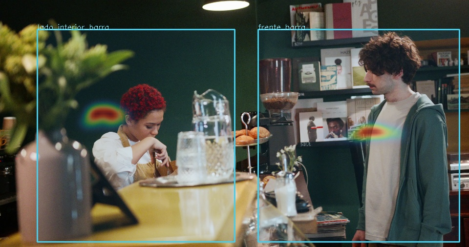
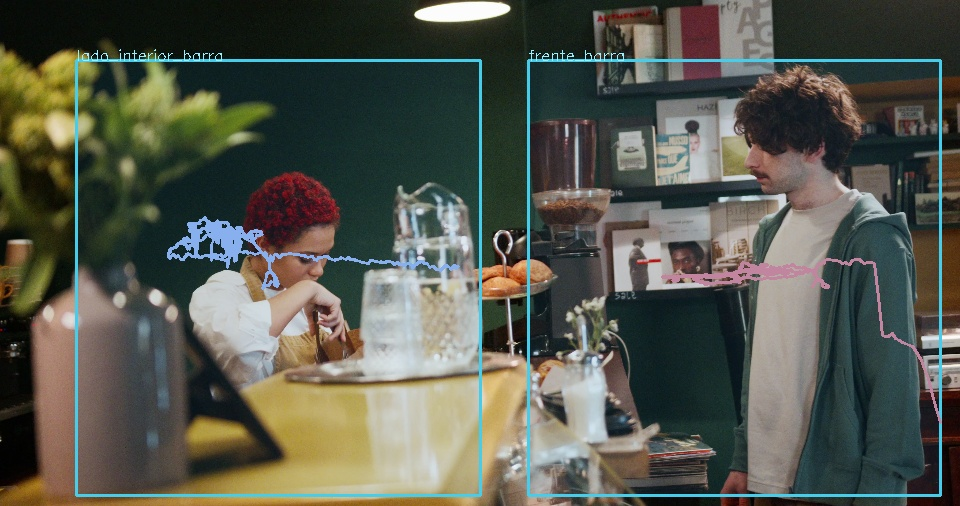

CAFÉ / ANALYTICS · MVP 0.1.1Procesamiento local
Movimiento que puedes medir.
Sesión 97c88547 · 36.0 s de video · 900 fotogramas analizados
IDs confirmados2
No equivale a clientes únicos Cruces de entrada—
Sin línea de acceso Cruces de salida—
Sin línea de acceso Velocidad de proceso4.2
Fotogramas por segundo La sesión, con contexto
ID, zonas, trayectorias y flecha de entrada. Abrir video si tu navegador no admite el códec.
Tiempo de presencia

Frío → cálido: menor → mayor tiempo acumulado. Intensidad relativa a esta sesión.
Trayectorias observadas

Un color por ID. Los huecos largos no se conectan.
Actividad por zona
| Zona | IDs | Persona-segundos | Media / visita | Pico |
|---|
| lado_interior_barra | 1 | 35.9 s | 35.9 s | 1 |
| frente_barra | 1 | 29.3 s | 29.3 s | 1 |
Tiempo observado: excluye huecos mayores de 0.5 s. Visitas cortadas por fin de video u oclusión se marcan en CSV; no son visitas completas.
Demo ilustrativa de barra: Ron Lach / Pexels 8430969. Encuadre cercano, cuerpos ocultos y clip de 36 s; no representa un dia de operacion. Usamos centro de caja, no posicion de pies. Las zonas son regiones de imagen, no roles: no distingue empleados de clientes. Sin acceso visible, no se configuran entradas/salidas. Permanencia no equivale a espera ni atencion. Los IDs pueden fragmentarse o intercambiarse con oclusiones. Sin reconocimiento facial ni inferencias de edad, género o emoción.
Motor: YOLOX-S + ONNX Runtime CPU. Sin subir video a la nube.
Demo con video de Ron Lach / Pexels 8430969, bajo licencia Pexels. Las personas y marcas del clip no respaldan este proyecto. Volver a la página pública.